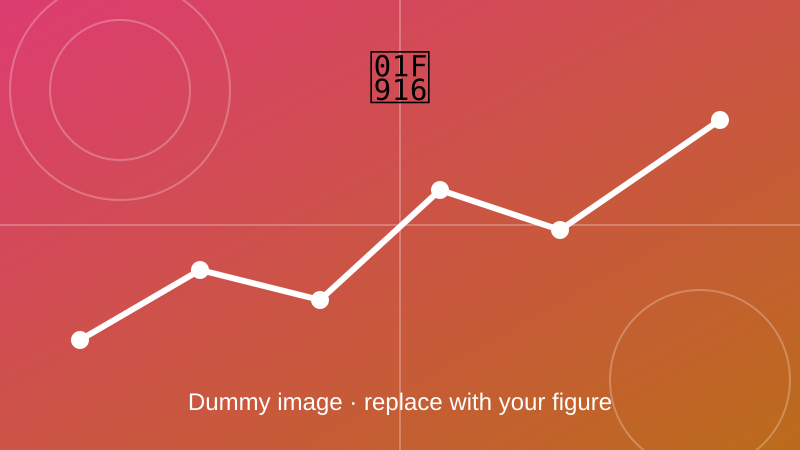

Line Follower Robot
A robot that follows a black and white line and can solve a maze.

Overview
A robot that follows a black and white line using three self-made IR sensors. It can solve a maze by recognising junction symbols such as plus, minus and T, and PWM signals control the motor speed and direction.
Objectives
- Detect the line with 3 IR sensors.
- Recognise junction symbols and solve the maze.
- Control motor speed and direction with PWM.
Method and key equations
The sensor readings give the robot's position relative to the line. A controller turns that error into a speed difference between the two wheels, which steers the robot back to the line.
Line position error from sensor readings \(s_i\) with position weights \(w_i\); \(e=0\) means the line is centred.
A PID controller turns the error into a steering correction \(u\).
The correction is added to one wheel and subtracted from the other around the base speed \(v_b\).
PWM: the average motor voltage follows the duty cycle \(D\).
Demo
Outcome
Add your results here: key findings, figures, and links to the related paper or code.